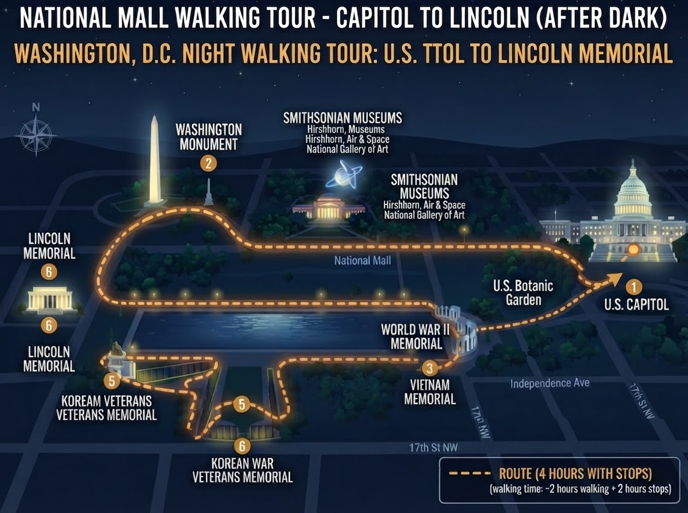

Monuments & Memorials
Photos, hours, nearest Metro, and ticket links for every stop on the Mall — plus when it's best to go.
Start Here: the four you can't skip
Open the full map →The Rest of The District
Find every stop on the map
How to use the map
Drag and zoom to see how the stops connect along the Mall. The Capitol sits at the east end and the Lincoln Memorial at the west end.
The Marine Corps War Memorial is the one stop that is not on the Mall. It is across the Potomac River in Arlington, so plan a separate trip for it.
WALK IT IN ONE AFTERNOON
The 3.5 mile loop, in the right order
Start at the Capitol steps, finish at Lincoln after dark. Every memorial above, no backtracking, about four hours with stops.
